Spectrograms
A spectrogram is an image of sound. It helps to instantly reveal speech patterns for patient analysis.
-
Horizontal axis (left → right) = time
Shows how sound changes over time. -
Vertical axis (bottom → top) = frequency (pitch)
Low sounds like vowels or humming appear nearer the bottom. High sounds like “s”, “f”, and “sh” appear higher. -
Color intensity = sound energy
Darker areas indicate stronger sound energy, while lighter areas indicate weaker sound.
Examples
Lets start with analyzing different animal sounds that create distinct visual signatures on a spectrogram. Comparing two familiar sounds side by side helps you quickly recognize how abrupt bursts differ from slower and more sustained patterns.
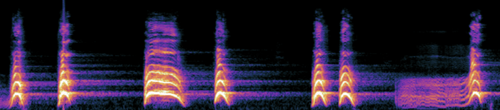
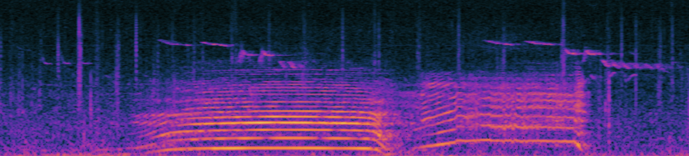
Rhythm changes on a spectrogram due to differing time lapses.
For example, the sound of walking usually creates more separated, evenly spaced impacts. However, running creates denser and faster repeating patterns because the foot strikes occur closer together in time.
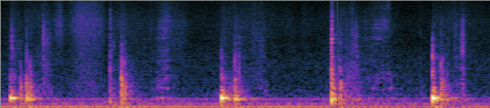
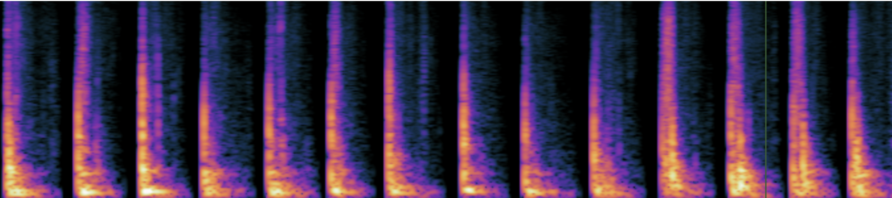
Here, we look at the exact same action: walking. On the left, the person is wearing sneakers and on the right, they are wearing heels. Even different footwear can change the acoustic pattern in a spectrogram.
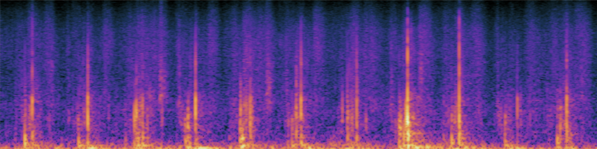
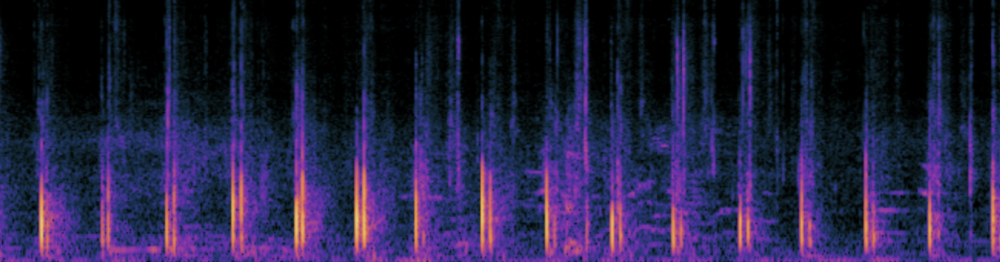
We still keep the same action here of walking. Now, we introduce two different surfaces to replace regular pavement: gravel and the ocean. Different surfaces introduce different background textures to the same action. Compare this with the plain walking examples above to see how the same movement can look very different once surface noise is added.
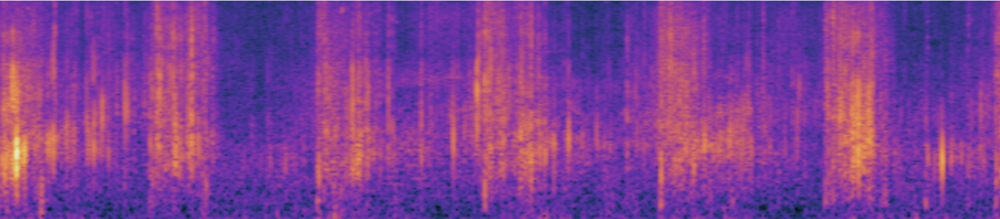
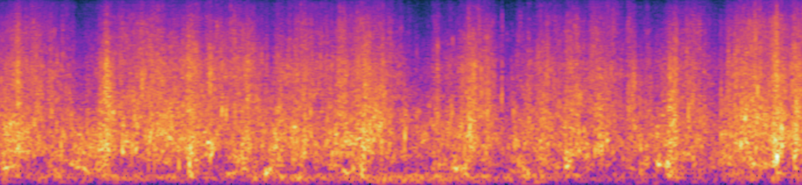
Noise in your environment, like rain and thunder, can immediatley make a spectrogram harder to read.
Light rain often appears as a fuzzy, continuous texture spread across time, while heavy rain and thunder appears stronger with possible energy bursts.
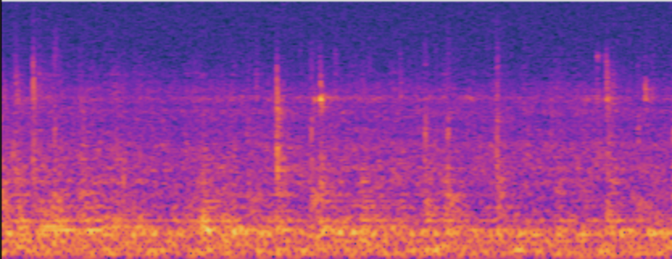
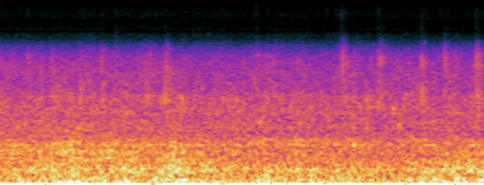
Background office noise can easily add low-level energy across time, making speech details look less distinct.
Instead of clear speech patterns standing out cleanly, the spectrogram may appear more cluttered or fuzzy due to overlapping conversations, movement, and room sounds.
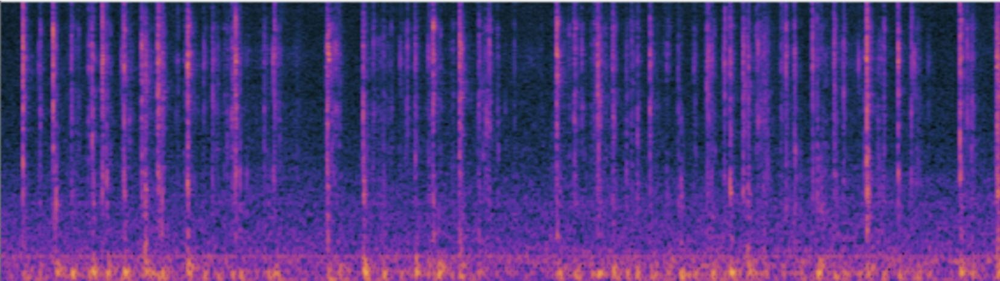